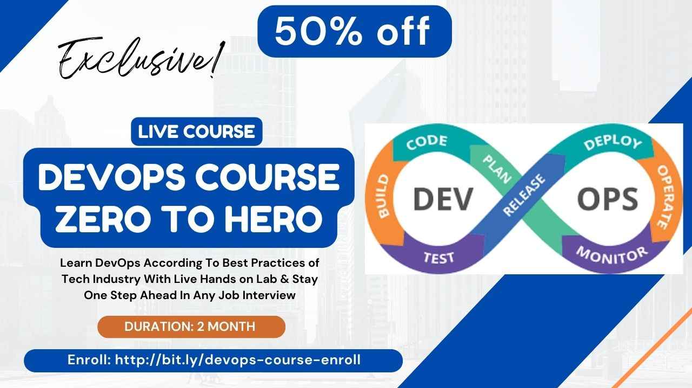

DevOps Mastery: Zero to Hero Course Outline
Best DevOps Course In 2024!
Module 1: Introduction to DevOps
- What is DevOps?
- The Evolution of DevOps
- Importance and Benefits of DevOps
- Lab Practice
Module 2: Source Control with Git
- Git Basics
- Branching and Merging
- Git Workflows
- Lab Practice
Module 3: Continuous Integration
- Introduction to CI
- Setting up a CI Pipeline
- Github Action Overview
- Lab Practice
Module 4: Continuous Delivery and Deployment
- What is Continuous Delivery?
- Deployment Strategies
- Automated Deployment with Github Action
- Lab Practice
Module 5: Containerization with Docker
- What are Containers?
- Introduction to Docker
- Docker Compose and Orchestration
- Lab Practice
Module 6: Kubernetes for Orchestration
- What is Kubernetes?
- Kubernetes Architecture
- Deploying Applications with Kubernetes
- Lab Practice
Module 7: Monitoring and Logging
- Importance of Monitoring
- Application Monitoring Prometheus and Grafana
- Logging with ELK Stack
- Lab Practice
Module 8: CI/CD Pipeline with Cloud
- What is CI/CD Pipeline
- Docker CI Pipeline (Part 1)
- Docker CD Pipeline
- Live Application Deployment with Docker CI/CD & AWS/Azure Cloud Server
- Lab Practice
Module 9: Microservices Deployment with Docker & Kubernetes
- What is Microservices
- How to write Docker Compose YML deployment file for Microservices
- Setup Nginx in AWS/Azure Cloud Server
- Deploy Microservices with Nginx in AWS/Azure Cloud Server
- Lab Practice
Module 10: Infrastructure as Code and Terraform
- Why Infrastructure as Code?
- Introduction to Terraform
- Terraform Best Practices
- Lab Practice
Module 11: Interview & Job Tips
- Best Practices in DevOps
- CV & Interview Tips
- How to land on DevOps Jobs from scratch